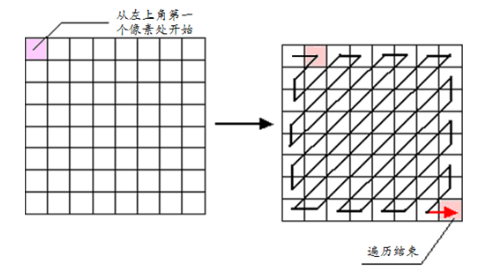
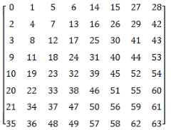
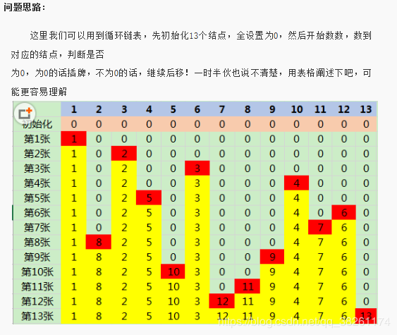
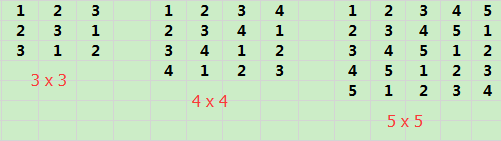

设计模式
编程之美-22个经典问题
阅读全文
Z字形排列问题
字形编排过程大致是这样的：经过前期处理的图像被分为若干个 的小图像块，此时就从小图像块的左上角开始沿Z字形对图像元素进行遍历，并将遍历所得的结果重新写入等大小的图像块中
Z字形编排问题主要应用在JPEG编码上，也叫Zigzag。主要思路就是从左上角第一个像素开始以Z字形进行编排。

经过Z自行排列之后，原图像矩阵中的序号变为如下图所示：

总结规律
对于原始矩阵matrix中的任意元素matrix[i][j]的遍历走向规律可以分为如下三种情况（偶数情况下）
1、如果二维数组中的元素matrix[i][j]中纵坐标j是偶数，且i=0或者i=7，那么遍历路径在矩阵中的走向就是水平向右移动一格。
2、如果二维数组中的元素matrix[i][j]中横坐标i是奇数，且j=0或者j=7，，那么遍历路径在矩阵中的走向就是垂直向下移动一格。
3、除上述规则以外的情况，如果二维数组中的元素matrix[i][j]的横纵坐标和i+j是偶数，则遍历路径在矩阵中的走向就是右上角移动一格；否则，若i+j是奇数，则遍历路径在矩阵中的走向就是左下角移动一格。
实现:
1 |
|
大整数乘法问题
由于计算机精度有限，因此单纯使用程序设计语言提供的原子数据类型来完成两个大整数的乘法显然是不合时宜的。因此考虑采用数组对大整数的每一位进行保存再进行运算从而解决了大整数的运算问题。

实现:
1 |
|
九宫格问题
九宫格是一种古老的数学游戏，它要求在3X3的矩阵中，填入1-9这9个数字，并且横向、纵向、斜向上的3个数字之和皆相等。类似问题在数学上被称为幻方。现将九宫格推广到5X5，7X7等幻方问题。根据求解口诀““一居上行正中央,依次斜填切莫忘;上出框时向下放,右出框时向左放;排重便在下格填,右上排重一个样”。所谓一居上行正中央说的是1在第一行的正中，依次 斜填切莫忘说的是一直向右上方填， 上出框时往下填是斜填到方框上面去了，就放在这竖行的最下边， 右出框时左边放是说斜填到右框外面，就在横行左边放， 排重便在下格填是斜填上面有数字了，就在自己的下面放， 右上排重一个样就是右上格上面没有格子了，就和排重一样，放在自己的下面。
根据一个用户输入的奇数，作为幻方矩阵的大小输出一个对应的矩阵。
1 |
|
约瑟夫环问题
N个人围成一圈，从第一个人开始报数，报到m的人出圈，剩下的人继续从1开始报数，报到m的人出圈；如此往复，直到所有人出圈。（模拟此过程，输出出圈的人的序号）
链表解法:
1 | import java.util.LinkedList; |
数学解法:
1 | public int LastRemaining_Solution(int n, int m) { |
魔术师发牌问题
魔术师利用一副牌中的13张黑桃牌，预先将他们排好后叠放在一起，牌面朝下。对观众说：“我不看牌，只数数就可以猜到每张牌是什么，
我大声数数，你们听，不信？现场演示。”魔术师将牌堆最上面的哪张排数为1，把他翻过来正好是黑桃A，将黑桃A从牌堆抽出放在桌子上，
第二次数1、2，将第一张放在牌堆最下面，第二张翻开，正好是黑桃2，也将它抽出放在桌子上。这样依次进行将13将牌全部翻出，准确无误。问牌最开始的顺序是怎样排的。

1 |
|
拉丁方阵的问题
拉丁方阵是一种n×n的方阵，方阵中恰有n种不同的元素，每种元素恰有n个，
并且每种元素在一行和一列中恰好出现一次。著名数学家和物理学家欧拉使用拉
丁字母来作为拉丁方阵里元素的符号，拉丁方阵因此而得名。

不知道你发现这样一个规律没？
比如3 x 3的拉丁方阵，第一行是1，2，3，第二行好像都向前移了一位，然后第一个元素跑到了最后面…
实现:
1 |
|
维吉尼亚加密法问题
https://www.cnblogs.com/inverseEntropy/p/10151176.html
括号匹配问题
图阅读全文
基本概念
https://www.cnblogs.com/ysocean/p/8032659.html
例题
二分图
- 判断是否为二分图
拓扑排序
- 课程安排的合法性
- 课程安排的顺序
并查集
- 冗余连接
https://github.com/CyC2018/CS-Notes/blob/master/notes/Leetcode%20%E9%A2%98%E8%A7%A3%20-%20%E5%9B%BE.md#%E4%BA%8C%E5%88%86%E5%9B%BE
参考文章:
Java数据结构和算法（十五）——无权无向图
分支限界法阅读全文
基本概念
https://www.cnblogs.com/steven_oyj/archive/2010/05/22/1741378.html
例题
01背包，最大团，单源最短路径，装载问题，布线问题
https://blog.csdn.net/zxzxzx0119/article/details/80102094
快慢指针
阅读全文
基本概念
快慢指针中的快慢指的是移动的步长，即每次向前移动速度的快慢。例如可以让快指针每次沿链表向前移动2，慢指针每次向前移动1次。
例题
判断单链表是否为循环链表
1 | int isExitsLoop(LinkList L) { |
在有序链表中寻找中位数
1 | while (fast&&slow) |
如果链表为存在环，如果找到环的入口点
1 | node* findLoopPort(node *head) { |
输出链表中的倒数第K个节点(即正数第K-1个节点)
1 | // 查找单链表中倒数第K个结点 |
参考文章:
快慢指针
关于快慢指针的若干应用详解
数组阅读全文
基本概念
https://www.cnblogs.com/ysocean/p/7894448.html
例题
- 把数组中的 0 移到末尾
- 改变矩阵维度
- 找出数组中最长的连续 1
- 有序矩阵查找
- 有序矩阵的 Kth Element
- 一个数组元素在 [1, n] 之间，其中一个数被替换为另一个数，找出重复的数和丢失的数
- 找出数组中重复的数，数组值在 [1, n] 之间
- 数组相邻差值的个数
- 数组的度
- 对角元素相等的矩阵
- 嵌套数组
- 分隔数组
哈希表阅读全文
基本概念
https://www.cnblogs.com/ysocean/p/8032656.html#_label3
例题
- 数组中两个数的和为给定值
- 判断数组是否含有重复元素
- 最长和谐序列
- 最长连续序列